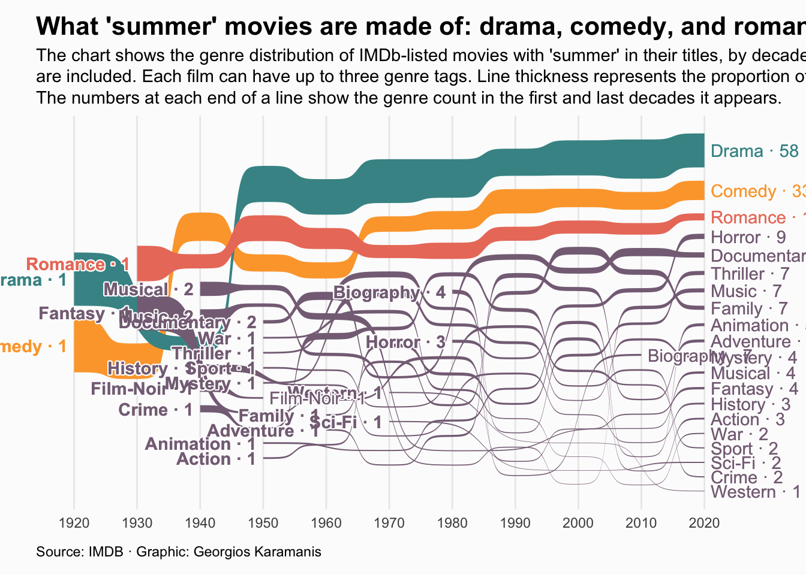

About
This chart visualizes the genre distribution of summer movies over decades using a Sankey bump chart. It highlights the three most common genres (Drama, Comedy, and Romance) and shows how their prevalence has changed over time.
The visualization is based on data from IMDb and focuses on movies with “summer” in their titles, providing insights into the evolving trends in summer-themed cinema.
It has been created by Georgios Karamanis. Thanks to him for sharing this beautiful chart!
Libraries
This chart requires several libraries, including
tidyverse for data manipulation and ggsankey
for creating the Sankey bump chart.
Dataset
The dataset is retrieved from the TidyTuesday GitHub repository and consists of two CSV files:
summer_movies.csv: Contains information about summer-themed movies.summer_movie_genres.csv: Contains genre information for these movies.
library(readr)
path <- "https://github.com/holtzy/R-graph-gallery/blob/master/DATA/summer_movie_genres.csv?raw=true"
path <- "DATA/summer_movie_genres.csv"
summer_movie_genres <- read_csv(path)
path <- "https://github.com/holtzy/R-graph-gallery/blob/master/DATA/summer_movies.csv?raw=true"
path <- "DATA/summer_movies.csv"
summer_movies <- read_csv(path)The data is prepared by filtering for movies, joining the two datasets, and calculating genre proportions by decade:
- Filters for movies
- Selects relevant columns
- Creates a decade factor
- Joins with genre information
- Calculates the number of movies per decade
- Groups by decade and genre
- Calculates median rating, count, and proportion for each genre within each decade
summer_genres <- summer_movies %>%
filter(title_type == "movie") %>%
select(tconst, primary_title, year, runtime_minutes, average_rating) %>%
mutate(decade = factor(year %/% 10 * 10)) %>%
left_join(summer_movie_genres) %>%
group_by(decade) %>%
mutate(decade_n = n()) %>%
ungroup() %>%
group_by(decade, genres) %>%
summarise(
score = median(average_rating, na.rm = TRUE),
n = n(),
decade_n,
prop = n / decade_n
) %>%
ungroup() %>%
distinct() %>%
filter(!is.na(decade) & !is.na(genres) & !is.na(score))Creating the Base Plot
A base Sankey bump chart is created using the
geom_sankey_bump() geom from ggsankey:
p <- ggplot(summer_genres, aes(x = decade, node = genres, fill = genres, value = prop, label = genres)) +
geom_sankey_bump() +
theme_minimal() +
theme(
legend.position = "bottom",
plot.background = element_rect(fill = "grey99", color = NA)
)
p
Preparing Label Data
Label data for the start and end of each genre line is prepared.
This code extracts the start and end positions for each genre line and joins them with the corresponding genre counts.
g_labs_start <- ggplot_build(p) %>%
.$data %>%
.[[1]] %>%
group_by(label) %>%
filter(x == min(x)) %>%
reframe(
x,
y = mean(y)
) %>%
left_join(summer_genres %>% group_by(genres) %>% filter(as.numeric(decade) == min(as.numeric(decade))), by = c("label" = "genres"))
g_labs_end <- ggplot_build(p) %>%
.$data %>%
.[[1]] %>%
group_by(label) %>%
filter(x == max(x)) %>%
reframe(
x,
y = mean(y)
) %>%
left_join(summer_genres %>% group_by(genres) %>% filter(as.numeric(decade) == max(as.numeric(decade))), by = c("label" = "genres"))Final Visualization
This final code: - Adds labels at the start and end of each line - Applies custom colors and styling - Adds title, subtitle, and caption - Customizes the theme for a polished look
# Colors
pal <- c(
"#FDA638",
"#459395",
"#EB7C69"
)
na_col <- "#866f85"
plot <- ggplot() +
geom_sankey_bump(data = summer_genres, aes(x = decade, node = genres, fill = if_else(genres %in% c("Drama", "Comedy", "Romance"), genres, NA), value = prop)) +
geom_shadowtext(data = g_labs_start, aes(x, y, label = paste(label, "·", n), color = if_else(label %in% c("Drama", "Comedy", "Romance"), label, NA)), hjust = 1, nudge_x = -0.1, bg.color = "grey99", fontface = "bold") +
geom_shadowtext(data = g_labs_end, aes(x, y, label = paste(label, "·", n), color = if_else(label %in% c("Drama", "Comedy", "Romance"), label, NA)), hjust = 0, nudge_x = 0.1, bg.color = "grey99") +
scale_fill_manual(values = pal, na.value = na_col) +
scale_color_manual(values = pal, na.value = na_col) +
coord_cartesian(clip = "off") +
theme_minimal() +
labs(
title = "What 'summer' movies are made of: drama, comedy, and romance",
subtitle = str_wrap("The chart shows the genre distribution of IMDb-listed movies with 'summer' in their titles, by decade. Only movies with at least 10 votes are included. Each film can have up to three genre tags. Line thickness represents the proportion of genre occurrences within each decade. The numbers at each end of a line show the genre count in the first and last decades it appears.", 140),
caption = "Source: IMDB · Graphic: Georgios Karamanis"
) +
theme(
legend.position = "none",
plot.background = element_rect(fill = "grey99", color = NA),
axis.title = element_blank(),
axis.text.y = element_blank(),
panel.grid.major.y = element_blank(),
panel.grid.minor.y = element_blank(),
plot.title = element_text(face = "bold", size = 16),
plot.subtitle = element_text(lineheight = 1),
plot.caption = element_text(margin = margin(10, 0, 0, 0), hjust = 0),
plot.margin = margin(10, 40, 10, 20)
)
plot
Going further
You might be interested in:
- Learning more about Sankey diagrams
- How to create an interactive sankey diagram
- Apply a theme to your charts